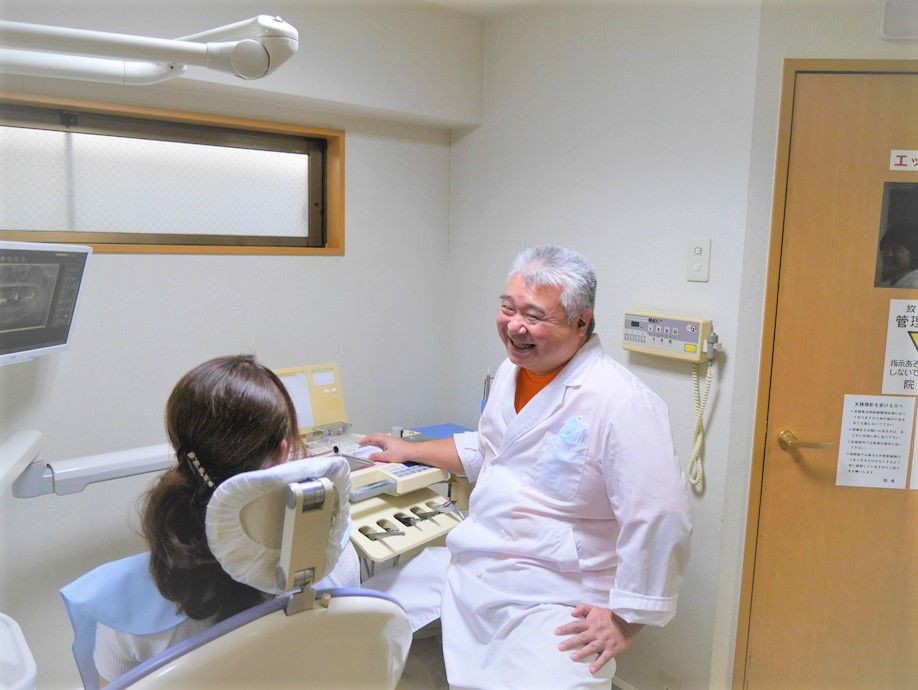
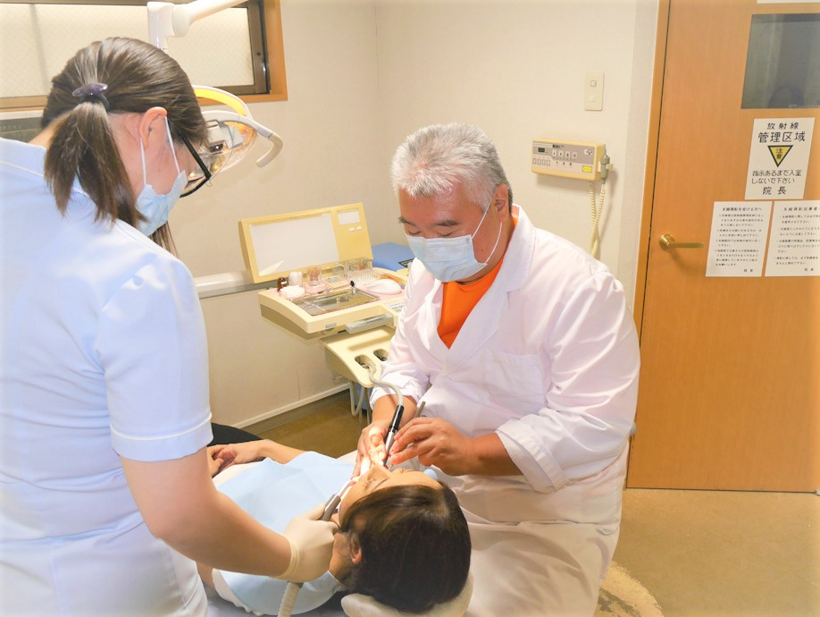
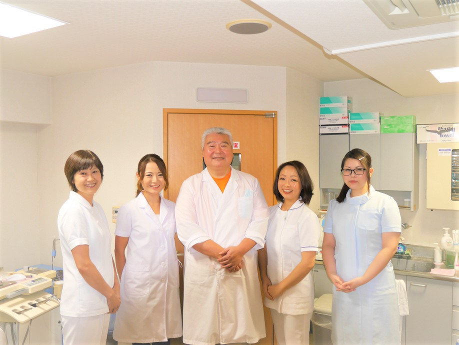
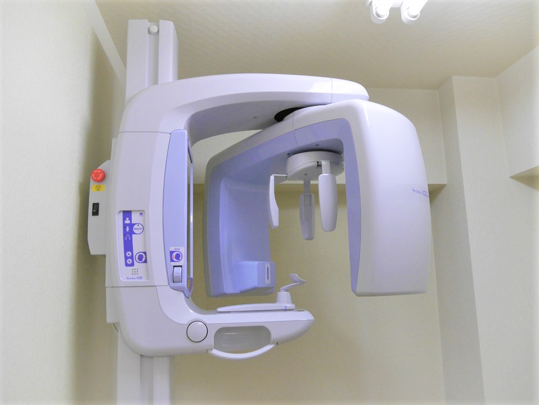
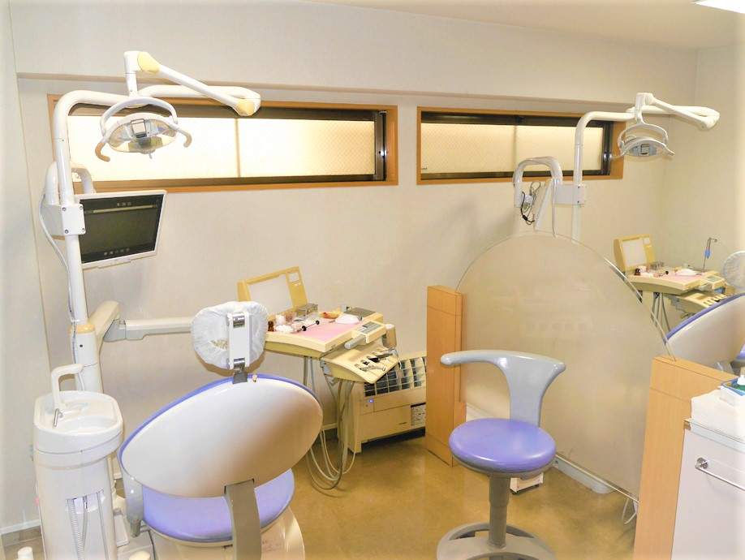

お知らせ
診療時間/アクセス
- 診療時間
- 歯科・小児歯科
- 住所
- 〒152-0034 東京都目黒区緑が丘1-7-21トーカングリーンクレスト1F
- TEL
- 03-3724-4618
- 最寄り駅
- 東急大井町線「緑が丘」駅 徒歩7分
- 診療時間
- 月
- 火
- 水
- 木
- 金
- 土
- 日
- 祝
- 9:30～12:30
- ●
- ●
- ●
- -
- ●
- ▲
- -
- -
- 15:00～19:00
- ●
- ●
- ●
- -
- ●
- -
- -
- -
▲ 9:00～12:30
選ばれる理由

治療前の丁寧な説明で安心感
患者さんに安心していただけるために、患者さんの話をよく聞き、治療に入る前に治療の順序や説明を丁寧に行います。
分からないことがあれば、ひとつひとつお答えして、納得していただいたうえで治療をうけていただけます。

10年、20年先の歯とお口の中をイメージ
治療して終わりではありません。いつまでも元気な歯とお口の中でいただけるために、10年、20年先と患者さんに合わせた歯とお口の中をイメージしながら治療やサポートに取り組んでいます。

親しみやすい人柄でアットホームな歯医者
院長はじめ、明るく元気なスタッフ。みんな親しみやすい人柄で、患者さんと世間話もできるアットホームな歯医者です。
緑が丘に根付いて20年、こどもも、おとなも、おじいちゃんも、おばあちゃんも、地元の多くの皆さんとともに歩み、信頼関係を築いています。

より的確な診断のために歯科用CTを完備
お口の中を三次元の立体画像から表示できる歯科用CTを完備しています。
骨の厚みや形、血管や神経の位置など明確に分かるため、治療の精度が高まります。歯科用CTは、身体にもやさしく、安心して検査していただけます。

院内環境が整っている
治療器具の滅菌をはじめとする衛生管理の徹底や、歯科用CTなどの先端設備の導入により、患者さんに安心して治療をうけていただけるために院内環境の整備に努めています。

緑が丘駅から徒歩7分
電車でもお車でも通える
東急大井町線「緑が丘」駅 から徒歩7分、東急東横線「都立大学」駅から徒歩12分、２つの線が重なる「自由が丘」駅から徒歩13分という立地にあります。また駐車場も完備しているので、電車でもお車でも通っていただけます。